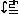

Another presentation of this result about flow graphs is to say
that for any strict symmetric premonoidal category
C P
we can find a symmetric monoidal category D
such that:
C
P

D
State(D)
So the state transformer premonoidal category is in this sense
canonical.